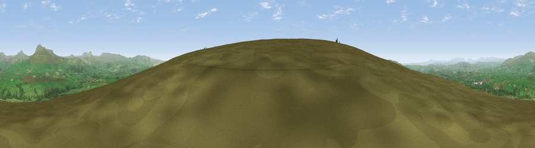

Viewpoint near High Bentham
#8005 in England · top 18% of its area beats it · near High BenthamWhere it is
The exact computed spot (SD 69662 65475). Click the marker for map links.
The view, rendered

A 360° render of this exact spot computed from the terrain model, tree cover and land cover — summer colours, afternoon light, calibrated against photographs of famous viewpoints. Real trees, hedges and buildings will differ in detail.
The panorama
Grey silhouette: terrain skyline in each direction (720 bearings, Earth curvature and refraction included). Dashed green: skyline with trees (+15 m) and buildings (+8 m) as obstacles. Blue strip: how far the ground is visible on each bearing.
Where the view opens
Wedge length = distance to the farthest visible ground on that bearing (vegetation-aware). Rings at 10, 25 and 50 km.
What fills the view
89% grassland · 9% woodland · 1% cropland ·
Angular shares of the visible panorama (visual magnitude), not map area. Landscape diversity 0.19 (0–1 Shannon).
Key numbers
More beautiful places nearby
The staircase of upgrades: each row has a higher view potential than everything closer. Driving times are estimates from straight-line distance, calibrated against real road routing — check an actual route before setting out.
| Place | Direction | Drive | Score |
|---|---|---|---|
| Burnmoor | SSW · 1 km | ~3 min | 69.6 |
| Viewpoint c9228_7386 | S · 4 km | ~9 min | 71.5 |
| Hailshowers Fell | S · 5 km | ~10 min | 73.8 |
| Viewpoint near Clapham | NNE · 7 km | ~15 min | 74.2 |
| Little Ingleborough | NNE · 9 km | ~18 min | 78.8 |
| Viewpoint near Ingleton | NNE · 10 km | ~20 min | 79.5 |
| Whernside | NNE · 17 km | ~29 min | 79.9 |
| Warton Crag | WNW · 22 km | ~36 min | 83.2 |
54.08429, -2.46524 · source: screening · position refined by local search. Computed location — check access rights before visiting.